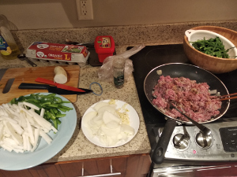
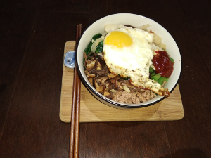
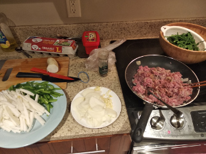
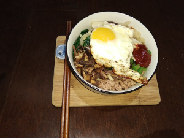

Not a Bibimbap
 



Ingredients:
- Pork, rice, eggs, veggies, mushrooms, soy sauce, sesame oil, sake, and whatever you recognize in the picture (:
How to make it:
- Cut everything
- Cook the veggies and the pork on a pan
- Make rice separately
- Cook a few eggs on a pan
Good Job. You are awesome!